Einführung
Diese Website hat das Ziel Kenntnisse zu den grundlegenen Funktionalitäten von Zoom zu vermitteln.
Übersicht
Schnellstart
Die nächste Seite - Konferenz beitreten - beschreibt, wie man sich ohne ein Benutzerkonto zu erstellen und sich Software zu installieren auf einem PC und Tablett in eine Zoom-Konferenz einwählen kann.
Um sich mit einem Smartphone in eine Zoom-Konferenz einzuwählen muss man sich vorher bei Google Play bzw. im Apple App Store die Zoom app herunterladen. Die Nutzung der App ist vorerst nicht weiter auf dieser Website beschrieben.
Fehlersuchhilfe
In dem nächsten Kapitel werden Hinweise gegeben, wie man technische Problem mit der Video-Konferenz beheben kann.
Interaktion in Konferenz
Dann werden Hinweise gegeben, für fortgeschrittene Funktionalitäten innerhalb der Konferenz.
Rechtlicher Hinweis
Zoom ist ein Markenzeichen von Zoom Video Communications, Inc. Es wird hier ohne Zustimmung oder Billigung von Zoom Video Communications, Inc. verwendet.
Konferenz beitreten
Im Rahmen von dem Schnellstart wird gezeigt, wie man sich ohne zusätzliche Installationen und Registrierung in einer Zoom Konferenz einwählen kann.
Übersicht
Das folgende Video gibt eine Demonstration von dem im Nachfolgenden beschriebenen Schritten.
(1) Öffnen von Meeting URL
Im Rahmen der Einladung zu einem Zoom Meeting bekommt man eine folgende Nachricht als Email oder Chat Nachricht zugestellt:
John Doe lädt Sie zu einem geplanten Zoom-Meeting ein.
Thema: Persönlicher Meetingraum von John Doe
Zoom-Meeting beitreten
https://us05web.zoom.us/j/123123123?pwd=XXXXXXXXXXXXXXXXXXXX
Meeting-ID: 123 123 1234
Kenncode: XXXXXX
Der erste Schritt ist es, die URL unter "Zoom-Meeting beitreten" in die Addresszeile des Browsers zu kopieren.
(2) Öffnen von Zoom App abbrechen
Die Website meldet dem Browser, dass sie es sich wünscht, dass der Nutzer das Meeting in der auf dem Computer zu installierenden App öffnet. Der Browser fragt dann nach, ob du diesem Wunsch stattgeben möchtest. Um weiter fortzufahren mit dem Einwählen in die Konferenz via Browser, klicke in diesem Dialog auf "Abbrechen".
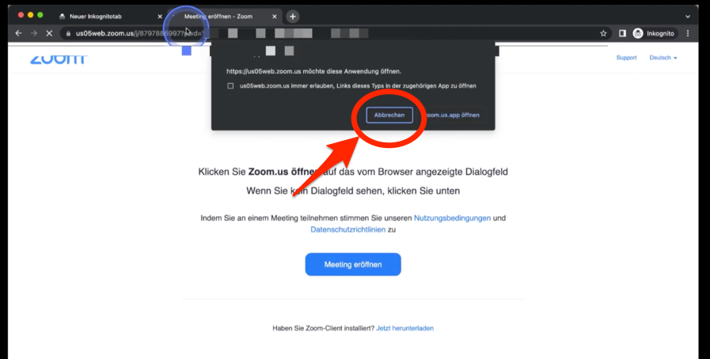
(3) Cookies akzeptieren
Als nächstes kommt ein Dialog, in dem die Website nach einer Bestätigung fragt, Cookies zu benutzen zu dürfen. Klicke hier auf den "Cookies akzeptieren" Button.
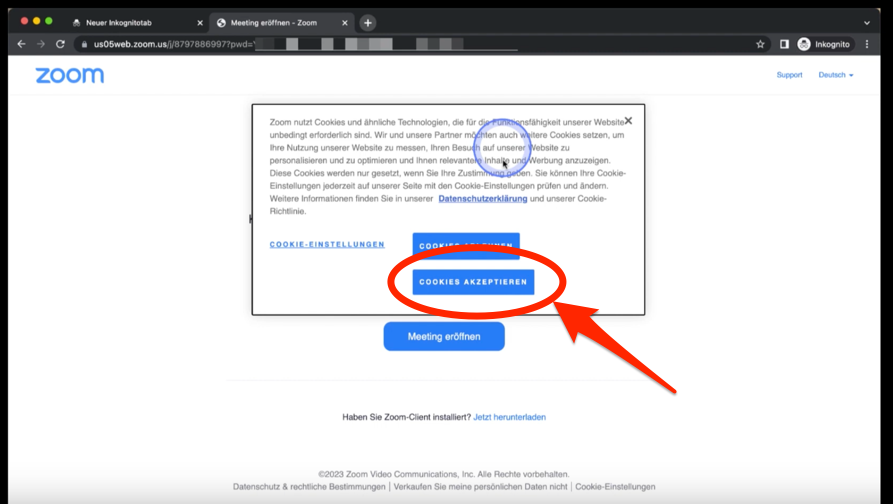
(4) Meeting eröffnen
Als nächstes, klicke auf den "Meeting eröffnen" Button.
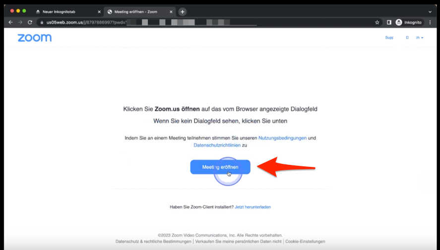
(5) Öffnen von Zoom App abbrechen
Die Website meldet dem Browser noch einmal, dass sie es sich wünscht, dass der Nutzer das Meeting in der auf dem Computer zu installierenden App öffnet. Der Browser fragt dann nach, ob du diesem Wunsch stattgeben möchtest. Um weiter fortzufahren mit dem Einwählen in die Konferenz via Browser, klicke in diesem Dialog auf "Abbrechen".
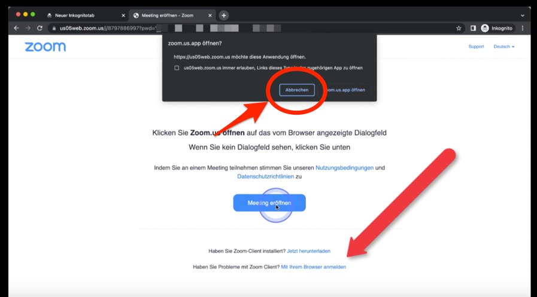
(6) Mit Browser anmelden
Nach dem Klick auf den "Meeting eröffnen" Button erscheint unterhalb des Buttons eine Nachricht "Haben Sie Problem mit Zoom Client?" Neben dieser Nachricht ist ein Link "Mit Ihrem Browser anmelden". Klicke nun auf diesen Link.
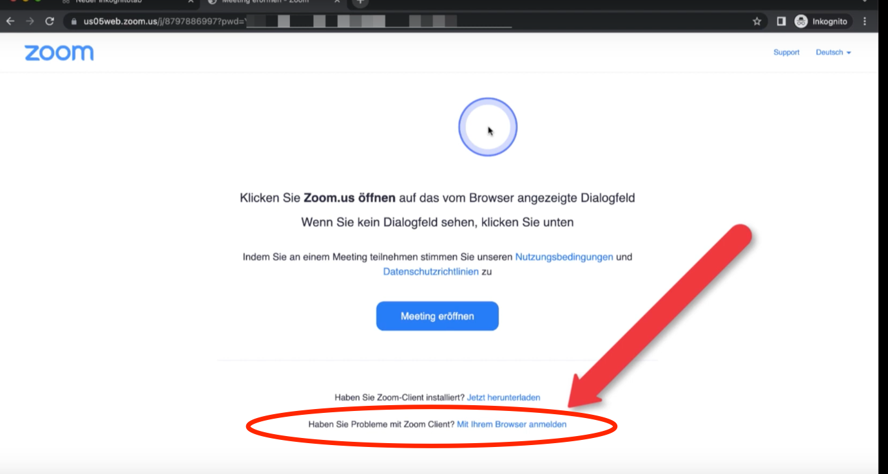
(7) Nutzungsbedingungen zustimmen
Klicke nun auf den "Ich stimme zu" Button, um den Nutzungsbedingungen und Datenschutzrichtlinien von Zoom zuzustimmen.
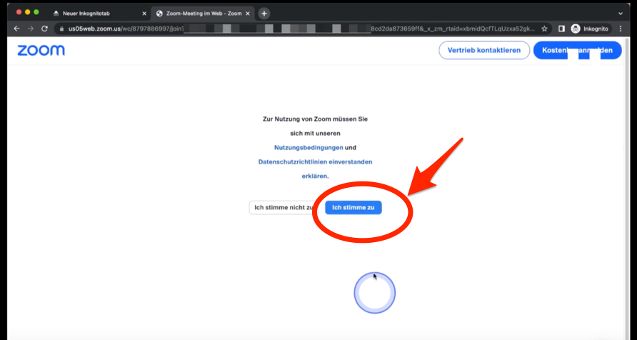
(8) Meeting beitreten
Gib nun Deinen Namen ein und klicke dann auf den "Beitreten" Button.
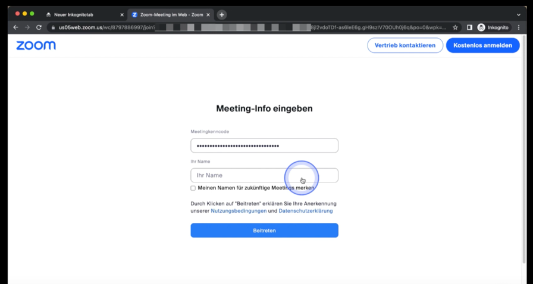
(9) Video-Vorschau
In der Video-Vorschau, kannst du nach einem Klick auf "Video starten" schonmal die Video Übertragung testen. Du kannst jedoch auch direkt auf den "Beitreten" Button klicken.
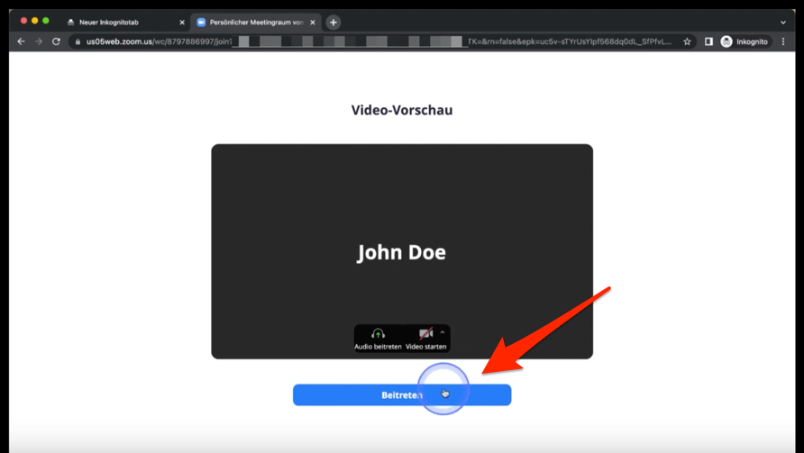
(10) Warten
Nun musst Du da drauf warten, dass der Gastgeber das Meeting startet und Dich in den Raum herein lässt. Die Seite wird sich dann automatisch neu laden.
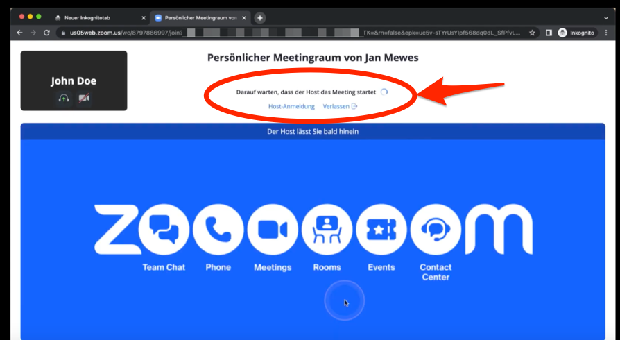
(11) An Audio per Computer teilnehmen
Nachdem der Gastgeber Dich in den Raum rein gelassen hat, klicke auf den "An Audio per Computer teilnehmen" Button.
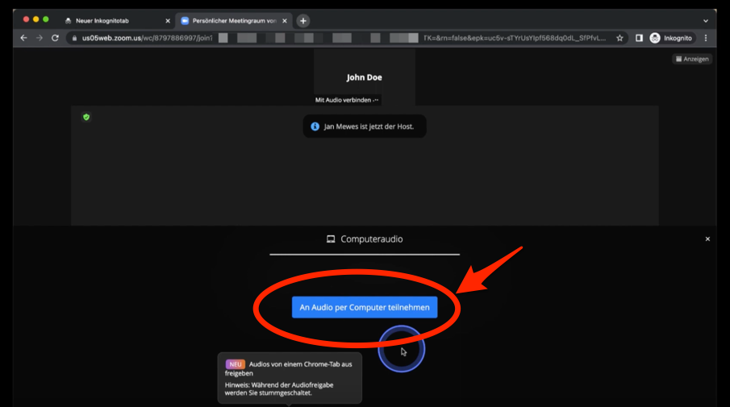
(12) Mikrofon und Video aktivieren
Das Aktivieren von Mikrofon und Video wird auf den beiden nachfolgenden Seiten beschrieben:
Weitere Informationen
Mikrophon ein/aus stellen
Klicke auf das Stummschalten Symbol links unten, um das Mikrophone ein bzw. aus zu stellen.
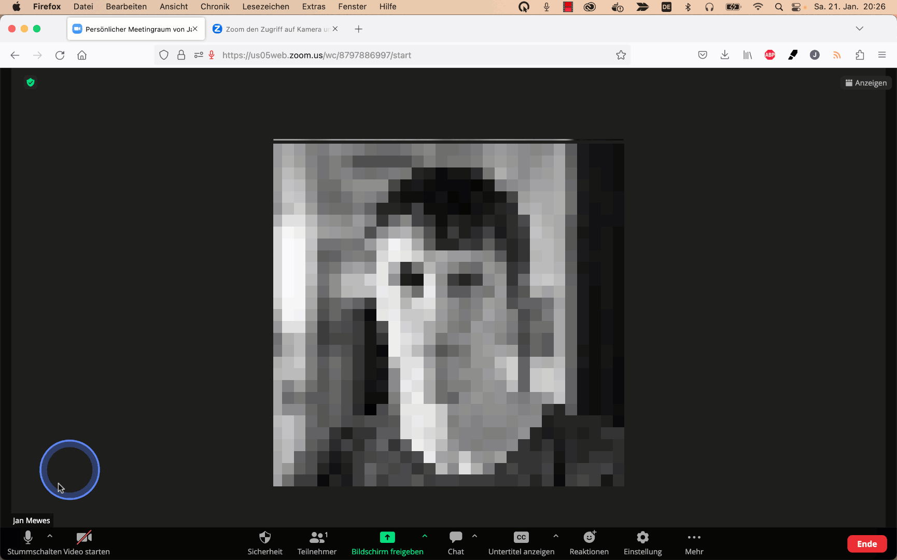
Video ein/aus
Klicke auf den "Video starten" Button, um die Video-Übertragung zu starten.
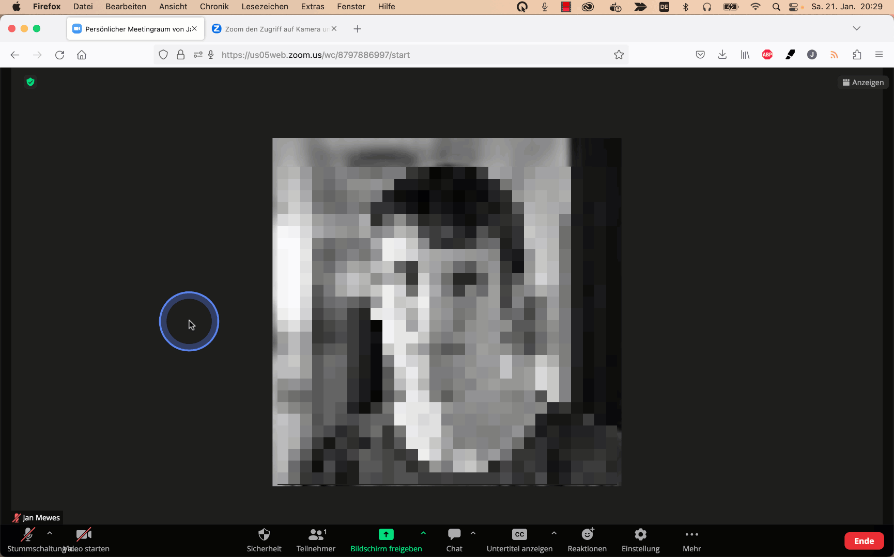
Analog dazu, klicke auf "Video anhalten", um die Video-Übertragung zu stoppen.
Windows
Inhaltsverzeichnis
Mikrophon funtioniert nicht
Muss die Stummschaltung aufgehoben werden?
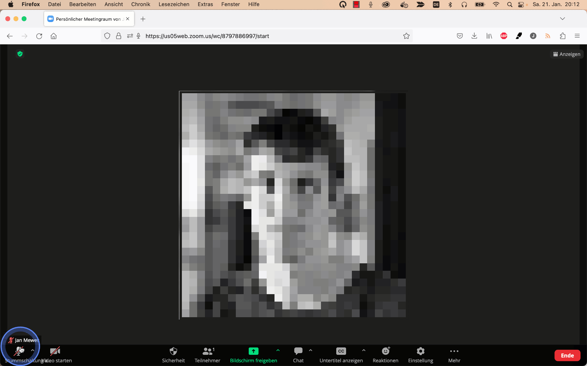
Wenn neben dem Mikrophon-Symbol ein gelbes Dreieck mit einem Ausrufezeichen steht, dann hat der Browser noch nicht die Erlaubnis, auf das Mikrophon zuzugreifen.
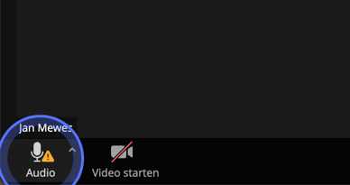
Auf dieser Webseite ist beschrieben, wie man dieses Problem beheben kann:
Lautsprecher funktioniert nicht
Schaue in den Audio-Einstellungen von Zoom, ob der richtige Lautsprecher bzw. Kopfhöhrer ausgewählt ist.
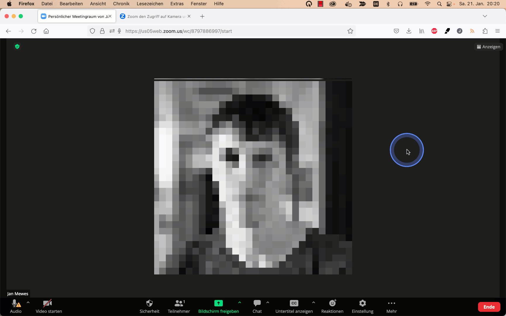
Support
Wenn die Hinweise oben nicht zur Problembehebung führen konnten, kontaktiere am besten jemanden per Telefon, so dass ihr gemeinsam das Problem beheben könnt. Ggf. könnt ihr mittels Fernzugriff, wie auf der Support-Seite beschrieben, gemeinsam auf deinen Rechner schauen.
Weiterführende Informationen
macOS
Inhaltsverzeichnis
Mikrophon funtioniert nicht
Muss die Stummschaltung aufgehoben werden?
Wenn neben dem Mikrophon-Symbol ein gelbes Dreieck mit einem Ausrufezeichen steht, dann hat der Browser noch nicht die Erlaubnis, auf das Mikrophon zuzugreifen.
Auf dieser Webseite ist beschrieben, wie man dieses Problem beheben kann:
Lautsprecher funktioniert nicht
Schaue in den Audio-Einstellungen von Zoom, ob der richtige Lautsprecher bzw. Kopfhöhrer ausgewählt ist.
Support
Wenn die Hinweise oben nicht zur Problembehebung führen konnten, kontaktiere am besten jemanden per Telefon, so dass ihr gemeinsam das Problem beheben könnt. Ggf. könnt ihr mittels Fernzugriff, wie auf der Support-Seite beschrieben, gemeinsam auf deinen Rechner schauen.
Weiterführende Informationen
Android
Support
Kontaktiere am besten jemanden per Telefon, so dass ihr gemeinsam das Problem beheben könnt.
iOS
Support
Kontaktiere am besten jemanden per Telefon, so dass ihr gemeinsam das Problem beheben könnt.
Bildschirm teilen
Um den Bildschirm zu teilen, klicke auf den "Bildschirm freigeben" Button und wähle dann aus, welches Fenster für die anderen Teilnehmer freigegeben werden soll.
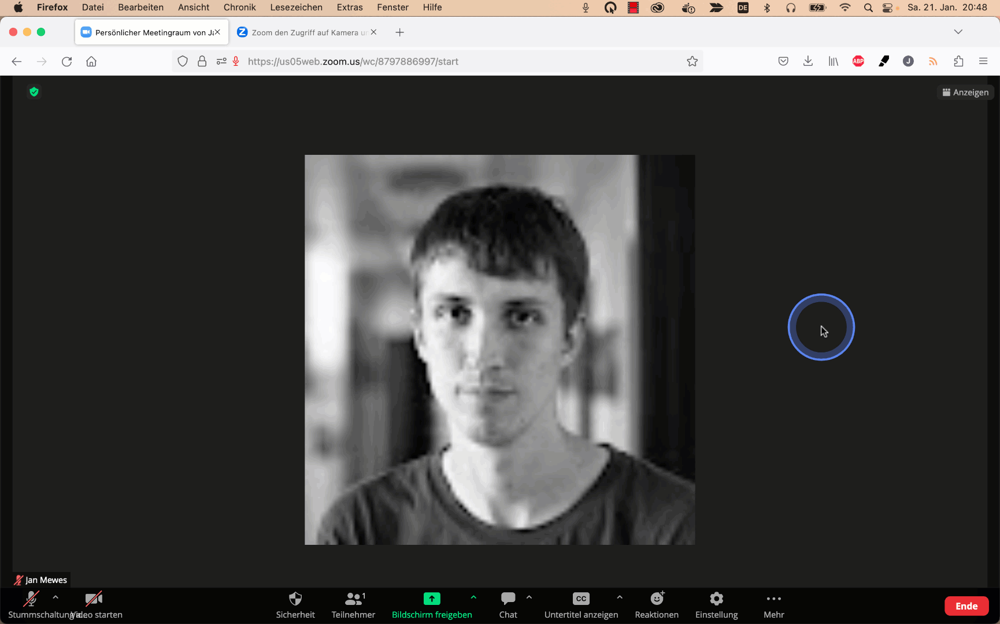
Chat
Um eine Textnachricht an die anderen Teilnehmer zu schicken, klicke auf den "Chat" Button, tippe dann in dem Eingabefeld rechts unten die Nachricht ein und schicke die Nachricht mit der Betätigung der Eingabetaste (engl. Return) ab.
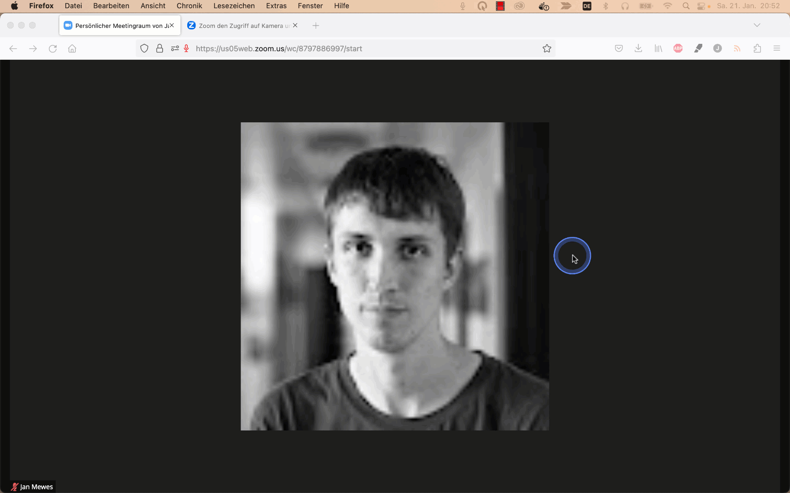
Support
Mit Hilfe von der Software TeamViewer kann man mittels Fernzugriff von einem Bekannten Hilfe für die Lösung von Problemen mit den Computer-Einstellungen bekommen.
Dieses Video zeigt ein Beispiel, wie man TeamViewer installieren und nutzen kann:
Impressum
Zoom ist ein Markenzeichen von Zoom Video Communications, Inc.. Es wird hier ohne Zustimmung oder Billigung von Zoom Video Communications, Inc. verwendet.
Angaben gemäß § 5 TMG:
Jan Mewes
Lutherstraße 169
07743 Jena
Germany
Bitte sehen Sie davon ab, die nachfolgenden Kontaktinformationen für andere Zwecke als rechtliche Anfragen zu benutzen. Es ist insbesondere nicht dafür gedacht, Support-Anfragen zu bearbeiten.
Kontakt:
| Telefon: | 03641-5519411 |
| E-Mail: | rechtliches@experimental-software.com |
Verantwortlich für den Inhalt nach § 55 Abs. 2 RStV:
Thema der Webseite: Einführung für die Teilnahme an Videokonferenzen mit Zoom
Jan Mewes
Lutherstraße 169
07743 Jena
Quelle: https://www.e-recht24.de
Haftungsausschluss (Disclaimer)
Haftung für Inhalte
Als Diensteanbieter sind wir gemäß § 7 Abs.1 TMG für eigene Inhalte auf diesen Seiten nach den allgemeinen Gesetzen verantwortlich. Nach §§ 8 bis 10 TMG sind wir als Diensteanbieter jedoch nicht verpflichtet, übermittelte oder gespeicherte fremde Informationen zu überwachen oder nach Umständen zu forschen, die auf eine rechtswidrige Tätigkeit hinweisen. Verpflichtungen zur Entfernung oder Sperrung der Nutzung von Informationen nach den allgemeinen Gesetzen bleiben hiervon unberührt. Eine diesbezügliche Haftung ist jedoch erst ab dem Zeitpunkt der Kenntnis einer konkreten Rechtsverletzung möglich. Bei Bekanntwerden von entsprechenden Rechtsverletzungen werden wir diese Inhalte umgehend entfernen.
Haftung für Links
Unser Angebot enthält Links zu externen Webseiten Dritter, auf deren Inhalte wir keinen Einfluss haben. Deshalb können wir für diese fremden Inhalte auch keine Gewähr übernehmen. Für die Inhalte der verlinkten Seiten ist stets der jeweilige Anbieter oder Betreiber der Seiten verantwortlich. Die verlinkten Seiten wurden zum Zeitpunkt der Verlinkung auf mögliche Rechtsverstöße überprüft. Rechtswidrige Inhalte waren zum Zeitpunkt der Verlinkung nicht erkennbar. Eine permanente inhaltliche Kontrolle der verlinkten Seiten ist jedoch ohne konkrete Anhaltspunkte einer Rechtsverletzung nicht zumutbar. Bei Bekanntwerden von Rechtsverletzungen werden wir derartige Links umgehend entfernen.
Urheberrecht
Die durch die Seitenbetreiber erstellten Inhalte und Werke auf diesen Seiten unterliegen dem deutschen Urheberrecht. Die Vervielfältigung, Bearbeitung, Verbreitung und jede Art der Verwertung außerhalb der Grenzen des Urheberrechtes bedürfen der schriftlichen Zustimmung des jeweiligen Autors bzw. Erstellers. Downloads und Kopien dieser Seite sind nur für den privaten, nicht kommerziellen Gebrauch gestattet. Soweit die Inhalte auf dieser Seite nicht vom Betreiber erstellt wurden, werden die Urheberrechte Dritter beachtet. Insbesondere werden Inhalte Dritter als solche gekennzeichnet. Sollten Sie trotzdem auf eine Urheberrechtsverletzung aufmerksam werden, bitten wir um einen entsprechenden Hinweis. Bei Bekanntwerden von Rechtsverletzungen werden wir derartige Inhalte umgehend entfernen.